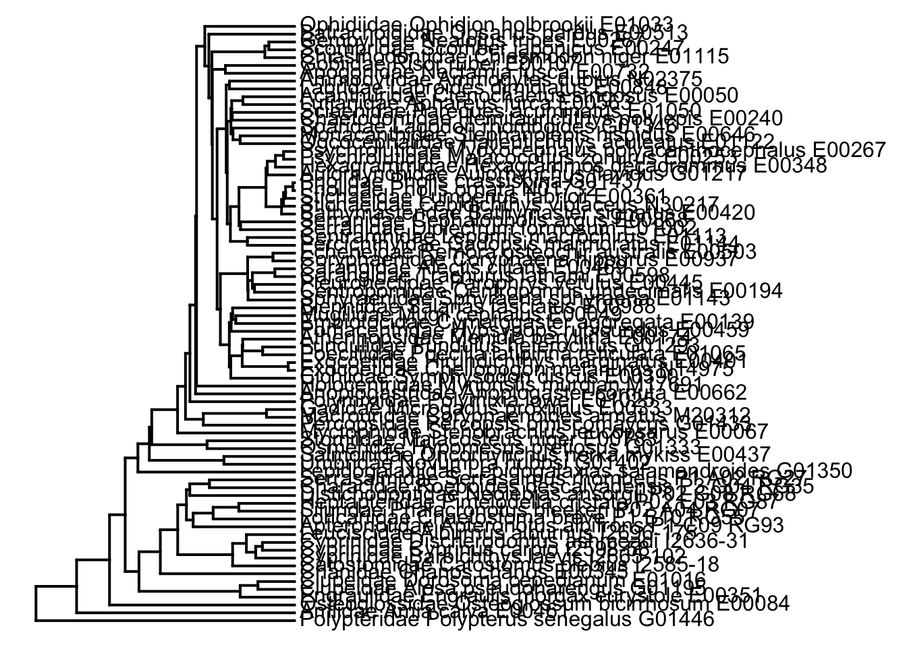

Last updated: 2022-04-11
Checks: 7 0
Knit directory: Code/
This reproducible R Markdown analysis was created with workflowr (version 1.7.0). The Checks tab describes the reproducibility checks that were applied when the results were created. The Past versions tab lists the development history.
Great! Since the R Markdown file has been committed to the Git repository, you know the exact version of the code that produced these results.
Great job! The global environment was empty. Objects defined in the global environment can affect the analysis in your R Markdown file in unknown ways. For reproduciblity it’s best to always run the code in an empty environment.
The command set.seed(20211230) was run prior to running the code in the R Markdown file. Setting a seed ensures that any results that rely on randomness, e.g. subsampling or permutations, are reproducible.
Great job! Recording the operating system, R version, and package versions is critical for reproducibility.
Nice! There were no cached chunks for this analysis, so you can be confident that you successfully produced the results during this run.
Great job! Using relative paths to the files within your workflowr project makes it easier to run your code on other machines.
Great! You are using Git for version control. Tracking code development and connecting the code version to the results is critical for reproducibility.
The results in this page were generated with repository version e47dde2. See the Past versions tab to see a history of the changes made to the R Markdown and HTML files.
Note that you need to be careful to ensure that all relevant files for the analysis have been committed to Git prior to generating the results (you can use wflow_publish or wflow_git_commit). workflowr only checks the R Markdown file, but you know if there are other scripts or data files that it depends on. Below is the status of the Git repository when the results were generated:
Ignored files:
Ignored: .DS_Store
Ignored: .Rhistory
Ignored: .Rproj.user/
Ignored: Flexibility Comparisons.nb.html
Ignored: Main.nb.html
Ignored: PGLS.FullData.nb.html
Ignored: PGLSforeachMeasFeature.nb.html
Ignored: PGLSwithPCA_Dims.nb.html
Ignored: PreppedVertMeas.nb.html
Ignored: ProcessCymatogasterFiles.nb.html
Ignored: ProcessFCSVfiles.nb.html
Ignored: TestingHabitatwithFriedmanData.nb.html
Ignored: Trilok_tree.nb.html
Ignored: VertLM.nb.html
Ignored: VertMeasLDA_Attempt.nb.html
Ignored: VertPGLS.nb.html
Ignored: VertPairs.nb.html
Ignored: analysis/.DS_Store
Ignored: analysis/10-VertLM.nb.html
Ignored: analysis/20-plot_phylogeny.nb.html
Ignored: analysis/21-plot_fits_and_summary.nb.html
Ignored: analysis/CheckSpeciesMatch.nb.html
Ignored: caper_test.nb.html
Ignored: data/.DS_Store
Ignored: ggtree_attempt.nb.html
Ignored: plot_example_data.nb.html
Ignored: plot_fits_and_summary.nb.html
Ignored: plot_phylogeny.nb.html
Ignored: renv/library/
Ignored: renv/staging/
Ignored: summarize_vert_meas.nb.html
Ignored: test_phylogeny.nb.html
Ignored: test_vertebraspace.nb.html
Ignored: vert_evol.Rproj
Untracked files:
Untracked: Main.html
Untracked: ProcessFCSVfiles.Rmd
Untracked: VertPGLS.html
Untracked: gg_saver.R
Untracked: output/BodyDistribution.pdf
Untracked: output/MasterVert_Measurements.csv
Untracked: output/mean_d_alphaPos_CBL.pdf
Untracked: output/pair_plot.pdf
Untracked: output/plot_example_data_figure.pdf
Untracked: output/stats_table.rtf
Untracked: plot_fits_and_summary.Rmd
Untracked: summarize_vert_meas.html
Untracked: testtree.csv
Untracked: vert_tree.csv
Note that any generated files, e.g. HTML, png, CSS, etc., are not included in this status report because it is ok for generated content to have uncommitted changes.
These are the previous versions of the repository in which changes were made to the R Markdown (analysis/11-VertPGLS.Rmd) and HTML (docs/11-VertPGLS.html) files. If you’ve configured a remote Git repository (see ?wflow_git_remote), click on the hyperlinks in the table below to view the files as they were in that past version.
| File | Version | Author | Date | Message |
|---|---|---|---|---|
| Rmd | 23908bd | Eric Tytell | 2021-12-30 | Test site build again |
| Rmd | edeae3c | Eric Tytell | 2021-12-30 | Rename notebooks to indicate order |
library(tidyverse)── Attaching packages ─────────────────────────────────────── tidyverse 1.3.1 ──✓ ggplot2 3.3.5 ✓ purrr 0.3.4
✓ tibble 3.1.4 ✓ dplyr 1.0.7
✓ tidyr 1.1.3 ✓ stringr 1.4.0
✓ readr 2.0.1 ✓ forcats 0.5.1── Conflicts ────────────────────────────────────────── tidyverse_conflicts() ──
x dplyr::filter() masks stats::filter()
x dplyr::lag() masks stats::lag()library(ggbeeswarm)
library(phytools)Loading required package: apeLoading required package: maps
Attaching package: 'maps'The following object is masked from 'package:purrr':
maplibrary(patchwork)
library(here)here() starts at /Users/etytel01/Documents/Vertebrae/Codelibrary(nlme)
Attaching package: 'nlme'The following object is masked from 'package:dplyr':
collapselibrary(ape)
library(geiger)
library(ggtree)ggtree v3.0.2 For help: https://yulab-smu.top/treedata-book/
If you use ggtree in published research, please cite the most appropriate paper(s):
1. Guangchuang Yu. Using ggtree to visualize data on tree-like structures. Current Protocols in Bioinformatics, 2020, 69:e96. doi:10.1002/cpbi.96
2. Guangchuang Yu, Tommy Tsan-Yuk Lam, Huachen Zhu, Yi Guan. Two methods for mapping and visualizing associated data on phylogeny using ggtree. Molecular Biology and Evolution 2018, 35(12):3041-3043. doi:10.1093/molbev/msy194
3. Guangchuang Yu, David Smith, Huachen Zhu, Yi Guan, Tommy Tsan-Yuk Lam. ggtree: an R package for visualization and annotation of phylogenetic trees with their covariates and other associated data. Methods in Ecology and Evolution 2017, 8(1):28-36. doi:10.1111/2041-210X.12628
Attaching package: 'ggtree'The following object is masked from 'package:nlme':
collapseThe following object is masked from 'package:ape':
rotateThe following object is masked from 'package:tidyr':
expandlibrary(emmeans)
library(car)Loading required package: carData
Attaching package: 'car'The following object is masked from 'package:dplyr':
recodeThe following object is masked from 'package:purrr':
somelibrary(Hmisc)Loading required package: latticeLoading required package: survivalLoading required package: Formula
Attaching package: 'Hmisc'The following object is masked from 'package:ape':
zoomThe following objects are masked from 'package:dplyr':
src, summarizeThe following objects are masked from 'package:base':
format.pval, unitscitation()
To cite R in publications use:
R Core Team (2021). R: A language and environment for statistical
computing. R Foundation for Statistical Computing, Vienna, Austria.
URL https://www.R-project.org/.
A BibTeX entry for LaTeX users is
@Manual{,
title = {R: A Language and Environment for Statistical Computing},
author = {{R Core Team}},
organization = {R Foundation for Statistical Computing},
address = {Vienna, Austria},
year = {2021},
url = {https://www.R-project.org/},
}
We have invested a lot of time and effort in creating R, please cite it
when using it for data analysis. See also 'citation("pkgname")' for
citing R packages.print(getRversion())[1] '4.1.2'citation("nlme")
Pinheiro J, Bates D, DebRoy S, Sarkar D, R Core Team (2021). _nlme:
Linear and Nonlinear Mixed Effects Models_. R package version 3.1-153,
<URL: https://CRAN.R-project.org/package=nlme>.
A BibTeX entry for LaTeX users is
@Manual{,
title = {{nlme}: Linear and Nonlinear Mixed Effects Models},
author = {Jose Pinheiro and Douglas Bates and Saikat DebRoy and Deepayan Sarkar and {R Core Team}},
year = {2021},
note = {R package version 3.1-153},
url = {https://CRAN.R-project.org/package=nlme},
}packageVersion("nlme")[1] '3.1.153'citation("ape")
To cite ape in a publication please use:
Paradis E. & Schliep K. 2019. ape 5.0: an environment for modern
phylogenetics and evolutionary analyses in R. Bioinformatics 35:
526-528.
A BibTeX entry for LaTeX users is
@Article{,
title = {ape 5.0: an environment for modern phylogenetics and evolutionary analyses in {R}},
author = {E. Paradis and K. Schliep},
journal = {Bioinformatics},
year = {2019},
volume = {35},
pages = {526-528},
}
As ape is evolving quickly, you may want to cite also its version
number (found with 'library(help = ape)' or 'packageVersion("ape")').packageVersion("ape")[1] '5.5'citation("geiger")
To cite medusa, auteur, or geiger in a publication use:
medusa
Alfaro Michael E, Francesco Santini, Chad Brock, Hugo Alamillo, Alex
Dornburg, Daniel L Rabosky, Giorgio Carnevale, and Luke J Harmon.
2009. Nine exceptional radiations plus high turnover explain species
diversity in jawed vertebrates. PNAS 106:13410-13414.
auteur
Eastman Jonathan M, Michael E Alfaro, Paul Joyce, Andrew L Hipp, and
Luke J Harmon. 2011. A novel comparative method for identifying
shifts in the rate of character evolution on trees. Evolution
65:3578-3589.
MECCA
Slater Graham J, Luke J Harmon, Daniel Wegmann, Paul Joyce, Liam J
Revell, and Michael E Alfaro. 2012. Fitting models of continuous
trait evolution to incompletely sampled comparative data using
approximate Bayesian computation. Evolution 66:752-762.
geiger-orig
Harmon Luke J, Jason T Weir, Chad D Brock, Richard E Glor, and
Wendell Challenger. 2008. GEIGER: investigating evolutionary
radiations. Bioinformatics 24:129-131.
geiger
Pennell Matthew W, Jonathan M Eastman, Graham J Slater, Joseph W
Brown, Josef C Uyeda, Richard G FitzJohn, Michael E Alfaro, and Luke
J Harmon. 2014. geiger v2.0: an expanded suite of methods for fitting
macroevolutionary models to phylogenetic trees. Bioinformatics
30:2216-2218.
To see these entries in BibTeX format, use 'print(<citation>,
bibtex=TRUE)', 'toBibtex(.)', or set
'options(citation.bibtex.max=999)'.packageVersion("geiger")[1] '2.0.7'vertdata_sum <- read_csv(here("output/vertdata_summary_lm.csv"))Rows: 83 Columns: 90── Column specification ────────────────────────────────────────────────────────
Delimiter: ","
chr (5): Species, Habitat, Water_Type, MatchSpecies, MatchGenus
dbl (85): fineness, CBL_med, CBL_max, CBL_mn, d_med, d_max, d_mn, alphaAnt_m...
ℹ Use `spec()` to retrieve the full column specification for this data.
ℹ Specify the column types or set `show_col_types = FALSE` to quiet this message.This is the whole Betancur-R tree.
tree <- read.tree(here('data/12862_2017_958_MOESM2_ESM.tre'))Get the names of species from the tree.
allspecies <- tibble(tree$tip.label)
colnames(allspecies) <- c('FullName')
head(allspecies)# A tibble: 6 × 1
FullName
<chr>
1 Rajidae_Leucoraja_erinacea_G01356
2 Callorhinchidae_Callorhinchus_milii_G01235
3 Latimeriidae_Latimeria_chalumnae_G01347
4 Neoceratodontidae_Neoceratodus_forsteri_G01534
5 Protopteridae_Protopterus_aethiopicus_annectens_G01451
6 Lepidosirenidae_Lepidosiren_paradoxa_G01352 And split the names into family, genus, and species.
allspecies <-
allspecies %>% separate(FullName, sep='_', into=c('Family', 'Genus', 'Species'),
extra='drop', remove=FALSE)Set up the tip number (just the row)
allspecies$Tip <- seq_len(nrow(allspecies))vertdata <- left_join(vertdata_sum, allspecies,
by=c("MatchGenus"="Genus", "MatchSpecies"="Species")) %>%
select(-(ends_with(".x") | ends_with(".y")))
vertdata# A tibble: 83 × 93
Species Habitat Water_Type MatchSpecies MatchGenus fineness CBL_med CBL_max
<chr> <chr> <chr> <chr> <chr> <dbl> <dbl> <dbl>
1 Abramis_… pelagic freshwater alburnus Alburnus 8.95 0.0166 0.0177
2 Alectis_… demers… marine ciliaris Alectis 8.75 0.0346 0.0357
3 Alosa_ps… pelagic anadromous pseudoharen… Alosa 7.39 0.0165 0.0173
4 Amia_cal… demers… freshwater calva Amia 6.72 0.00983 0.0113
5 Ammodyte… benthic marine dubius Ammodytes 16.9 0.0132 0.0141
6 Anodonto… pelagic freshwater cepedianum Dorosoma 4.66 0.0228 0.0238
7 Anoplarc… benthic marine <NA> <NA> 8.62 0.0195 0.0212
8 Anoplarc… benthic marine <NA> <NA> 9.51 0.0156 0.0176
9 Anoploga… pelagic marine cornuta Anoplogas… 5.04 0.0287 0.0329
10 Aphareus… pelagic marine furca Aphareus 5.01 0.0312 0.0334
# … with 73 more rows, and 85 more variables: CBL_mn <dbl>, d_med <dbl>,
# d_max <dbl>, d_mn <dbl>, alphaAnt_med <dbl>, alphaAnt_max <dbl>,
# alphaAnt_mn <dbl>, alphaPos_med <dbl>, alphaPos_max <dbl>,
# alphaPos_mn <dbl>, DAnt_med <dbl>, DAnt_max <dbl>, DAnt_mn <dbl>,
# DPos_med <dbl>, DPos_max <dbl>, DPos_mn <dbl>, dBW_med <dbl>,
# dBW_max <dbl>, dBW_mn <dbl>, DAntBW_med <dbl>, DAntBW_max <dbl>,
# DAntBW_mn <dbl>, DPosBW_med <dbl>, DPosBW_max <dbl>, DPosBW_mn <dbl>, …Drop species without a match
vertdata %>%
filter(is.na(Tip)) %>%
distinct(Species, .keep_all=TRUE) %>%
select(Species, MatchGenus, MatchSpecies, Tip, Habitat)# A tibble: 4 × 5
Species MatchGenus MatchSpecies Tip Habitat
<chr> <chr> <chr> <int> <chr>
1 Anoplarchus_insignis <NA> <NA> NA benthic
2 Anoplarchus_purpurescens <NA> <NA> NA benthic
3 Xiphister_atropurpureus <NA> <NA> NA benthic
4 Xiphister_mucosus <NA> <NA> NA benthicvertdata <-
vertdata %>%
filter(!is.na(Tip))ourspecies <-
vertdata %>%
distinct(Species, .keep_all=TRUE)verttree <- keep.tip(tree, tip=as.vector(ourspecies$Tip))plotTree(verttree)
vertdata_sp <-
vertdata %>%
distinct(FullName, .keep_all = TRUE) %>%
mutate(rowname = FullName) %>%
column_to_rownames(var = "rowname")verttree <- keep.tip(tree, tip=as.vector(vertdata_sp$Tip))left_join(as_tibble(verttree),
vertdata_sp %>%
rownames_to_column("label") %>%
select(label, Habitat)) %>%
tidytree::as.treedata() %>%
ggtree(layout = 'circular') + # geom_tiplab() +
geom_tippoint(aes(color = Habitat))Joining, by = "label"Check if tree and data match
length(verttree$tip.label)[1] 77nrow(vertdata_sp)[1] 77name.check(verttree, vertdata_sp)[1] "OK"Merge the measurements and the tree
verttree_data <-
as_tibble(verttree) %>%
left_join(vertdata_sp %>%
rownames_to_column("label") %>%
select(label, Habitat, Family,
ends_with("80"), ends_with("max"), ends_with("med"), ends_with("slope"), ends_with("quad")))Joining, by = "label"vertdata_sp <-
vertdata_sp %>%
mutate(CBL_vtx = -CBL_slope / CBL_quad,
alphaPos_vtx = -alphaPos_slope / alphaPos_quad,
alphaAnt_vtx = -alphaAnt_slope / alphaAnt_quad,
d_vtx = -d_slope / d_quad,
DAnt_vtx = -DAnt_slope / DAnt_quad,
DPos_vtx = -DPos_slope / DPos_quad)Save out the tree data. There is something subtly different about saving the data out as a csv file and saving it as an RDS file. The base class of the tree is tbl_tree, but when we load it back in from a csv, despite having exactly the same data, it won’t work with the tidytree functions. So we save it in an RDS file, which preserves the class.
write_csv(vertdata_sp, here('output/vertdata_summary_lm_species.csv'))
saveRDS(verttree, here('output/vert_tree.rds'))vertdata_sp0 <-
vertdata_sp %>%
mutate(across(contains('slope') | contains('quad'),
~ replace_na(., 0)))var <- c(#'CBL_80', 'd_80', 'alphaAnt_80', 'alphaPos_80', 'DAnt_80', 'DPos_80',
#'CBL_max', 'd_max', 'alphaAnt_max', 'alphaPos_max', 'DAnt_max', 'DPos_max',
'CBL_mn', 'd_mn', 'alphaAnt_mn', 'alphaPos_mn', 'DAnt_mn', 'DPos_mn',
#'CBL_med', 'd_med', 'alphaAnt_med', 'alphaPos_med', 'DAnt_med', 'DPos_med',
'fineness',
#'CBL_slope', 'd_slope', 'alphaAnt_slope', 'alphaPos_slope', 'DAnt_slope', 'DPos_slope',
'CBL_vtx', 'd_vtx', 'alphaAnt_vtx', 'alphaPos_vtx', 'DAnt_vtx', 'DPos_vtx',
'CBL_quad', 'd_quad', 'alphaAnt_quad', 'alphaPos_quad', 'DAnt_quad', 'DPos_quad')
#'CBL_order', 'd_order', 'alphaAnt_order', 'alphaPos_order', 'DAnt_order', 'DPos_order')
modeltests <- tibble()
for (i in seq_along(var)) {
print(var[i])
fmla <- as.formula(paste(var[i], "Habitat", sep = " ~ "))
mod <- gls(fmla, correlation = corBrownian(1, phy = verttree, form = ~FullName),
data = vertdata_sp0, method = "ML")
ava <- broom::tidy(Anova(mod))
ava$var = var[i]
ava$model = list(mod)
modeltests <- bind_rows(modeltests, ava)
}[1] "CBL_mn"
[1] "d_mn"
[1] "alphaAnt_mn"
[1] "alphaPos_mn"
[1] "DAnt_mn"
[1] "DPos_mn"
[1] "fineness"
[1] "CBL_vtx"
[1] "d_vtx"
[1] "alphaAnt_vtx"
[1] "alphaPos_vtx"
[1] "DAnt_vtx"
[1] "DPos_vtx"
[1] "CBL_quad"
[1] "d_quad"
[1] "alphaAnt_quad"
[1] "alphaPos_quad"
[1] "DAnt_quad"
[1] "DPos_quad"modeltests %>%
dplyr::select(var, statistic, p.value, everything()) %>%
filter(p.value < 0.05 | str_detect(var, "dBW")) %>%
arrange(var)# A tibble: 5 × 6
var statistic p.value term df model
<chr> <dbl> <dbl> <chr> <dbl> <list>
1 alphaPos_mn 20.1 0.0000437 Habitat 2 <gls>
2 CBL_quad 11.1 0.00385 Habitat 2 <gls>
3 CBL_vtx 6.42 0.0404 Habitat 2 <gls>
4 d_mn 8.61 0.0135 Habitat 2 <gls>
5 d_vtx 21.2 0.0000251 Habitat 2 <gls> compare_habitats <- function(model) {
emm <- emmeans(model, ~Habitat)
p <- as.data.frame(pairs(emm))
es <- as.data.frame(eff_size(emm, sigma = sigma(model), edf = model$dims$N - model$dims$p))
p$effect.size <- es$effect.size
p %>%
mutate(contrast = str_replace(contrast, "(\\w+) - (\\w+)", "\\1_\\2")) %>%
select(contrast, p.value, effect.size) %>%
rename(p = p.value, eff = effect.size) %>%
pivot_wider(names_from = contrast, values_from = c(p, eff),
names_glue = "{contrast}_{.value}")
}habitat_means <- function(model) {
emm <- emmeans(model, ~Habitat)
as.data.frame(emm) %>%
select(Habitat, emmean, SE) %>%
rename(mn = emmean,
se = SE) %>%
pivot_wider(names_from = Habitat, values_from = c(mn, se),
names_glue = "{Habitat}_{.value}")
}modeltests <-
modeltests %>%
dplyr::select(var, statistic, p.value, everything()) %>%
# filter(p.value < 0.05) %>%
mutate(mc = purrr::map(model, compare_habitats)) %>%
unnest(mc) %>%
mutate(total_eff = abs(benthic_demersal_eff) + abs(benthic_pelagic_eff) + abs(demersal_pelagic_eff)) %>%
mutate(hm = purrr::map(model, habitat_means)) %>%
unnest(hm) %>%
# filter(total_eff > 0.5) %>%
relocate(p.value, total_eff, ends_with("_p"), .after = var) %>%
arrange(desc(total_eff))modeltests %>%
filter(abs(benthic_demersal_eff) >= 0.2 | abs(benthic_pelagic_eff) >= 0.2 | abs(demersal_pelagic_eff) >= 0.2)# A tibble: 12 × 19
var p.value total_eff benthic_demersa… benthic_pelagic… demersal_pelagi…
<chr> <dbl> <dbl> <dbl> <dbl> <dbl>
1 alphaPos_mn 0.0000437 1.05 0.000899 0.00191 0.413
2 CBL_quad 0.00385 0.963 0.635 0.0231 0.00378
3 d_mn 0.0135 0.860 0.805 0.0132 0.0310
4 d_vtx 0.0000251 0.799 0.0000937 0.0239 1.00
5 CBL_vtx 0.0404 0.730 0.670 0.133 0.0359
6 alphaAnt_mn 0.0948 0.626 0.884 0.168 0.0836
7 DAnt_quad 0.208 0.524 0.855 0.186 0.306
8 alphaAnt_quad 0.167 0.521 0.556 0.499 0.175
9 DPos_quad 0.271 0.472 0.947 0.253 0.326
10 fineness 0.279 0.456 0.788 0.492 0.260
11 alphaPos_quad 0.216 0.448 0.452 0.718 0.274
12 DPos_mn 0.340 0.410 0.735 0.623 0.336
# … with 13 more variables: statistic <dbl>, term <chr>, df <dbl>,
# model <list>, benthic_demersal_eff <dbl>, benthic_pelagic_eff <dbl>,
# demersal_pelagic_eff <dbl>, benthic_mn <dbl>, demersal_mn <dbl>,
# pelagic_mn <dbl>, benthic_se <dbl>, demersal_se <dbl>, pelagic_se <dbl>emmeans(modeltests$model[[2]], ~Habitat) Habitat emmean SE df lower.CL upper.CL
benthic -0.02279 0.0386 74 -0.0997 0.0541
demersal -0.02882 0.0381 74 -0.1048 0.0472
pelagic 0.00649 0.0392 74 -0.0716 0.0846
Degrees-of-freedom method: df.error
Confidence level used: 0.95 sigvars <- pull(modeltests, var)write_csv(modeltests, here("output/modeltests.csv"))
saveRDS(modeltests, here("output/PGLSmodels.Rds"))This sets up the data in long form, with all the variables stacked, and the variables ordered by descending total effect size.
vertdata_long <-
vertdata_sp0 %>%
select(Habitat, Species, !!sigvars) %>%
pivot_longer(cols = !Habitat & !Species, names_to = "var", values_to = "value") %>%
left_join(
modeltests %>%
select(var, total_eff, p.value),
by = "var") %>%
mutate(var = as.factor(var),
var = fct_reorder(var, total_eff, .desc = TRUE))Plot all the effects
vertdata_long %>%
filter(!is.na(var) & p.value < 0.05) %>%
ggplot(aes(x = Habitat, y = value, color = Habitat)) +
geom_quasirandom(width=0.3, alpha = 0.5) +
stat_summary(fun.data = mean_sdl) +
# geom_boxplot(width=0.3, alpha=0.5, outlier.shape = NA) +
stat_summary(aes(group = 1), fun = "mean", geom = "line") +
facet_wrap(~ var, scales = "free_y")
sessionInfo()R version 4.1.2 (2021-11-01)
Platform: x86_64-apple-darwin17.0 (64-bit)
Running under: macOS Big Sur 10.16
Matrix products: default
BLAS: /Library/Frameworks/R.framework/Versions/4.1/Resources/lib/libRblas.0.dylib
LAPACK: /Library/Frameworks/R.framework/Versions/4.1/Resources/lib/libRlapack.dylib
locale:
[1] en_US.UTF-8/en_US.UTF-8/en_US.UTF-8/C/en_US.UTF-8/en_US.UTF-8
attached base packages:
[1] stats graphics grDevices datasets utils methods base
other attached packages:
[1] Hmisc_4.5-0 Formula_1.2-4 survival_3.2-13 lattice_0.20-45
[5] car_3.0-11 carData_3.0-4 emmeans_1.6.3 ggtree_3.0.2
[9] geiger_2.0.7 nlme_3.1-153 here_1.0.1 patchwork_1.1.1
[13] phytools_0.7-80 maps_3.3.0 ape_5.5 ggbeeswarm_0.6.0
[17] forcats_0.5.1 stringr_1.4.0 dplyr_1.0.7 purrr_0.3.4
[21] readr_2.0.1 tidyr_1.1.3 tibble_3.1.4 ggplot2_3.3.5
[25] tidyverse_1.3.1
loaded via a namespace (and not attached):
[1] readxl_1.3.1 backports_1.2.1 fastmatch_1.1-3
[4] workflowr_1.7.0 plyr_1.8.6 igraph_1.2.6
[7] lazyeval_0.2.2 splines_4.1.2 digest_0.6.27
[10] yulab.utils_0.0.2 htmltools_0.5.2 fansi_0.5.0
[13] checkmate_2.0.0 magrittr_2.0.1 cluster_2.1.2
[16] tzdb_0.1.2 openxlsx_4.2.4 modelr_0.1.8
[19] vroom_1.5.4 jpeg_0.1-9 colorspace_2.0-2
[22] rvest_1.0.1 haven_2.4.3 xfun_0.25
[25] crayon_1.4.1 jsonlite_1.7.2 phangorn_2.7.1
[28] glue_1.4.2 gtable_0.3.0 abind_1.4-5
[31] scales_1.1.1 mvtnorm_1.1-2 DBI_1.1.1
[34] Rcpp_1.0.7 plotrix_3.8-2 htmlTable_2.2.1
[37] xtable_1.8-4 tmvnsim_1.0-2 gridGraphics_0.5-1
[40] tidytree_0.3.5 bit_4.0.4 foreign_0.8-81
[43] subplex_1.6 deSolve_1.28 htmlwidgets_1.5.4
[46] httr_1.4.2 RColorBrewer_1.1-2 ellipsis_0.3.2
[49] farver_2.1.0 pkgconfig_2.0.3 nnet_7.3-16
[52] dbplyr_2.1.1 utf8_1.2.2 labeling_0.4.2
[55] ggplotify_0.1.0 tidyselect_1.1.1 rlang_0.4.11
[58] later_1.3.0 munsell_0.5.0 cellranger_1.1.0
[61] tools_4.1.2 cli_3.0.1 generics_0.1.0
[64] broom_0.7.9 evaluate_0.14 fastmap_1.1.0
[67] yaml_2.2.1 bit64_4.0.5 knitr_1.34
[70] fs_1.5.0 zip_2.2.0 whisker_0.4
[73] aplot_0.1.0 xml2_1.3.2 compiler_4.1.2
[76] rstudioapi_0.13 beeswarm_0.4.0 curl_4.3.2
[79] png_0.1-7 reprex_2.0.1 treeio_1.16.1
[82] clusterGeneration_1.3.7 stringi_1.7.4 highr_0.9
[85] Matrix_1.3-4 vctrs_0.3.8 pillar_1.6.2
[88] lifecycle_1.0.0 BiocManager_1.30.16 combinat_0.0-8
[91] estimability_1.3 data.table_1.14.0 httpuv_1.6.4
[94] R6_2.5.1 latticeExtra_0.6-29 promises_1.2.0.1
[97] renv_0.14.0 gridExtra_2.3 rio_0.5.27
[100] vipor_0.4.5 codetools_0.2-18 MASS_7.3-54
[103] assertthat_0.2.1 rprojroot_2.0.2 withr_2.4.2
[106] mnormt_2.0.2 expm_0.999-6 parallel_4.1.2
[109] hms_1.1.0 quadprog_1.5-8 grid_4.1.2
[112] rpart_4.1-15 coda_0.19-4 rmarkdown_2.10
[115] rvcheck_0.1.8 git2r_0.29.0 numDeriv_2016.8-1.1
[118] scatterplot3d_0.3-41 lubridate_1.7.10 base64enc_0.1-3